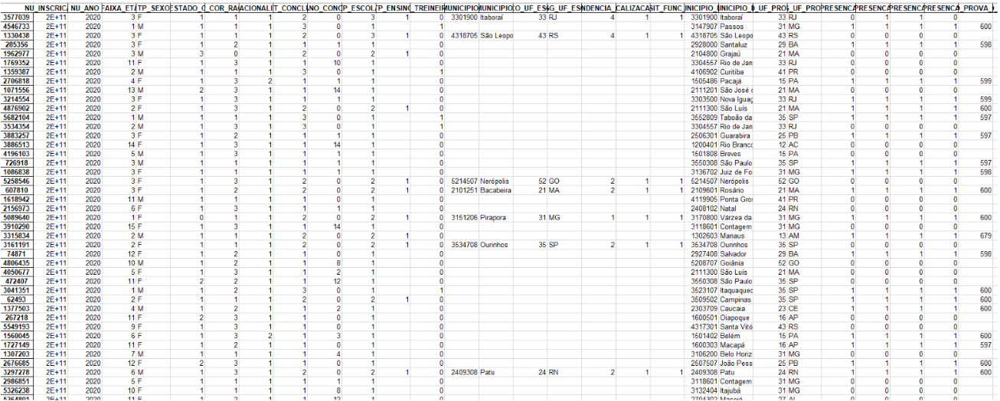
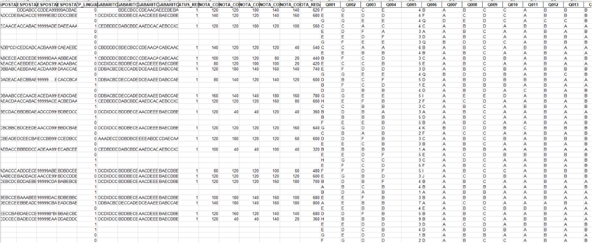
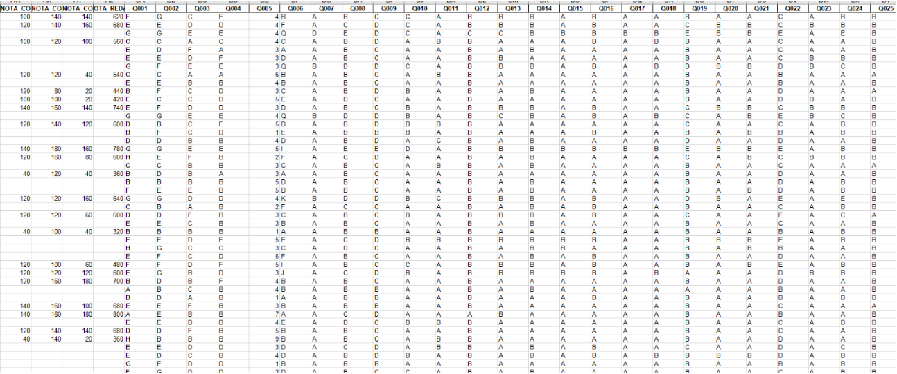

Matemática
Nesse trabalho tínhamos como objetivo calcular e colocar em uma tabela as seguintes tendencias de medida central : modal, mediana, variância e desvio padrão. Aprendemos a mexer e a fazer planilhas no Excel durante as aulas de TI no primeiro ano do Ensino Médio. Essas tendencias de medidas foram abordadas superficialmente pela professora de matemática do segundo ano do Ensino Médio. Mas realmente nos aprofundamos durante o terceirão.


